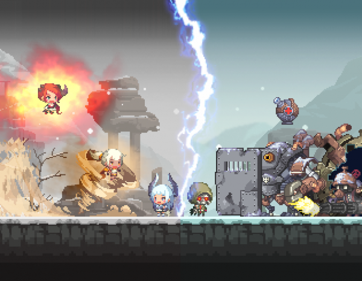
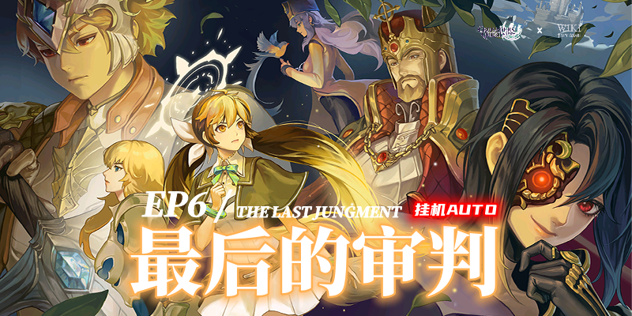
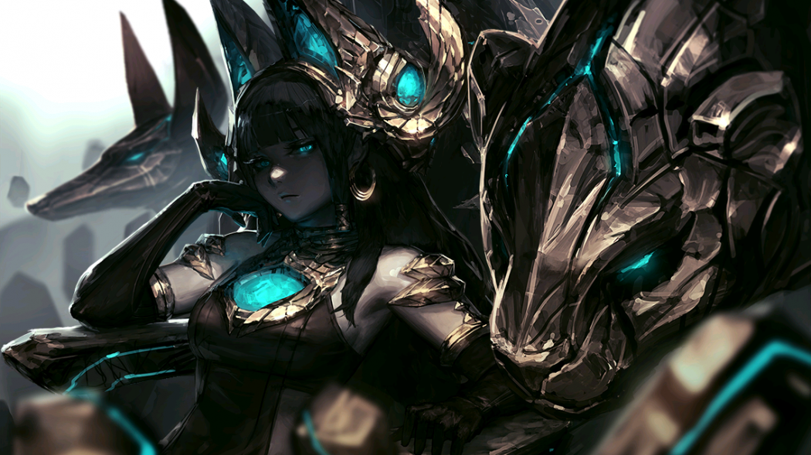
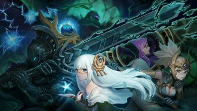

第一季：灵魂石编年史
| 章节 | 剧情 | 剧情介绍 |
|---|---|---|
| EP1~4 |
 使徒的复活
使徒的复活
|
使徒的复活是CQ第一季灵魂石编年史的前四章，讲述了守护使徒碎片的森林女神菲蕾丝蒂娜，某天被神秘女性抢夺了使徒碎片。感觉到不详的菲蕾丝蒂娜就先让见习女神塞拉离开。之后，菲蕾丝蒂娜因碎片的力量被黑暗侵蚀最终变成怪物... |
| EP5 |
 北风的记忆 |
过了一段时间，灵魂石远征队在帝国获得了一个情报：传闻最近在北方国家有异常的征兆。该传闻是关于怪物们的异常行动，因此远征队派出情报员打探虚实。一个月后，远征队为了确认情报的真伪直接前往北方国家。 |
| EP6 | 帝国军团 |
在北方发生的事情结束后，某日，城镇居民布里奇诺的突然弄出的骚动引起了正在一边调查灵魄石一边过着轻松日子的菲蕾丝蒂娜与队长的关注。这就是涅斯帝国发起了战争，同时在城镇周围发现了涅斯军的身影。 |
| EP7~8 | 光之继承者 |
战争结束后，光之力量开始觉醒，新的继承者出现，引领勇士团走向新的使命。本章节揭示灵魂石与光之女神的深层联系，为第二季剧情埋下伏笔。 |
第二季：卡尔拉德编年史
| 章节 | 剧情 | 剧情介绍 |
|---|---|---|
| EP1~3 | 影子与少女 |
艾尔塔罗斯和灵魂石被封印后的第三年，待在英雄城等待塞拉的菲蕾丝蒂娜在某天收到皇帝亚历山大的邀请，与勇士团前往格兰西亚首都遇到神秘少女,以及发现红衣教主的一些惊天阴谋 |
| EP4~5 | 幻想神殿 |
被遗迹的守护者重创的勇士团为了治疗回到了皇城，就在这时勇士团收到了一封罗蕾莱传来的信。信中提到请求帮助挖掘工作，因此勇士团与艾丽再次前往幻想神殿。 |
| EP6~7 | 冰与雪的神话 |
虽然恶作剧之神洛基被封印，但却未能阻止暴风雪外泄，这样下去可能对诺斯加尔德的居民造成巨大伤害，因此勇士们在迪欧奈的建议下一同前往首都斯诺里艾达...... |
| EP8~9 | 机械之神 |
令勇士团惊讶的是，帮助他们从研究所脱身的竟然是海底城市规划署的局长宾森恩。宾森恩表示，贵族院的幕后合作者正在进行魔道工学研究，而其线索就在于路德企业总部。 |
| EP10~11 |
 大海的呼唤
大海的呼唤
|
为了追查正在削弱地脉的幕后操纵者及唤醒河伯，海娘及勇士团决定拜见掌控山川的山神，前往东部汉国。 |
| EP12~13 |
 皇城攻城战 |
从太初之火山恢复力量的塞拉，她的真实身份是掌管这片大陆的女神——“荷塞拉”。为了寻找被卡尔拉德勒忒与亚勒拉特歪曲的真相，并将万物归宗，塞拉和主角团带领联军向着格兰西亚皇城进发…… |
讨伐遗迹的守护者
| 讨伐副本 | 剧情 | 剧情介绍 |
|---|---|---|
| 遗迹的守护者 |
 遗迹的守护者 |
卡尔拉德编年史核心讨伐副本，坐落于幻想神殿深处远古遗迹之中，作为封印卡尔拉德黑暗力量的守门兵器，拥有厚重护盾与大范围必杀招式。勇士团唯有将其击败，才能深入遗迹探寻被尘封的古老真相，解锁后续主线剧情。 |
外传灵魂要塞
| 外传篇章 | 剧情 | 剧情介绍 |
|---|---|---|
| 灵魂要塞 |
 灵魂要塞 |
独立于主线之外的特殊冒险副本，是大陆各处灵魂力量汇聚形成的神秘要塞，内部层数繁多，盘踞着各类灵魂魔物。这里是勇士历练成长、获取高阶养成资源的重要场所，同时也藏着许多不为人知的灵魂过往与隐秘往事。 |